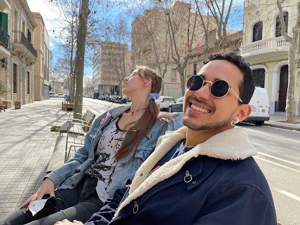

When we (Marina, Tatiana and Roberto) teamed up together to work on the fabacademy monthly challenge, we began by outlining our different interests, trying to find common ground for the project. We noticed plants, biology, science, interactivity and bioremediation pop up in common.
Some ideas popped up, like a spice holder, plant pots or even a small laser cut village.
How can we interact with our plants and living species in our home in a fun way?
On Wednesday, we finalized the sketches in order to get a clear idea of the output. We decided we wanted to make a panel that could be hung up on a wall, displaying propagated plants in test tubes. By choosing the propagated plants, we got the idea for the project: “Propagame”.
We started gathering all the materials needed:
First thing in the morning on Thursday, we all went to a plant shop to buy the plants we needed. The store was closed, so we sat in the sun while waiting for it to open.

Once the store opened, we searched for something which could be propagated in water, so that it could fit well in the test tubes we got the previous day. We decided upon getting a Pothos which we could cut and propagate, then two smaller plants in case we wanted to make a standing version of the plant game, in addition to the wall hanging one.
After this, Marina and Tatiana worked on making the wooden sticks in which to put the pegs. We found some scrap wood which we could use and began measuring the desired length, according to the tube length. One thing to note is that the scrap wood we found each had slightly different compositions and sizes, which is important to consider in the next few steps.
We settled upon making each piece 26cm, made the marks for the cuts and began cutting. We used the saw, then sanded the edges in order to get them all the exact same width and depth. It was hard to achieve this, but we managed.
Once every wooden piece was the same size and circumference, we proceeded to mark where we wanted our holes for the pegs to be. The pegs we chose were actually 0.6mm x 30mm dowels, so we based our measurements upon this. We chose to space the holes in 2cm gaps, but looking back we could have definitely gone smaller, perhaps 1,5cm.
We chose a 0.6mm drill attachment and began drilling according to the marks. After a few holes, we found a technique which worked well for us: Tatiana positioned the stick lengthwise while Marina centered it widthwise, making it align as perfectly as possible. We got our holes done and were super happy!
A consideration to keep in mind is that, given the difference in materials, some sticks were more fragile than others, especially the composite layered wood. This meant that some of the edges broke off during the drilling process, as pictured in the center piece.
While Marina and Tatiana worked on the wooden sticks, Roberto finalized the laser cutting project. We encountered some file compatibility issues, so we were set back a little bit.
Fabrication process of laser cutting:
- Laser cutter for cutting 3mm MDF: 55 power, 0.5 speed
- Laser cutter for engraving 3mm MDF: 70 power, 100 speed
First iteration (3D Fusion)
Second iteration (2D Illustrator)
Third iteration (Parametric sketch on Fusion)
Once we finished cutting the board on the laser cutter, we proceeded to assemble the different parts. We encountered some problems the first two times we cut the board such as the finger joints not fitting properly, so we had to iterate twice. The final result was one that could fit very well.
Propagame has a lot of potential for growth due to its flexible nature. We have started small with plants that can easily propagate but it can develop further into also including:
- Lights that serve as both a spotlight to showcase the plant, as well as a growing medium for indoor plants.
- Sounds, which would attract higher visibility.
- A stand-level version of Propagame which would be able to handle bigger plants and record changes over longer periods of time. It could serve as an A/B testing methodology for plant growth, comparing different kinds of plant supplements, lightning, watering, and many more.
Roberto
https://roberto-broce.github.io/MDEF-website/micro1.html
Tatiana
https://tatiana-butts.github.io/tatiana-butts/fabacademy/fabchallenge1.html
Marina
https://marina-lermant.github.io/mdef-website/fab3.html